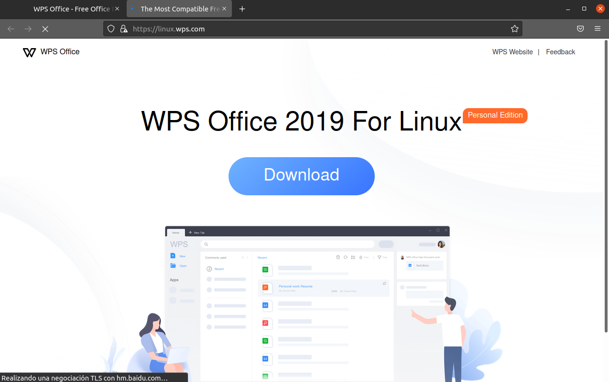
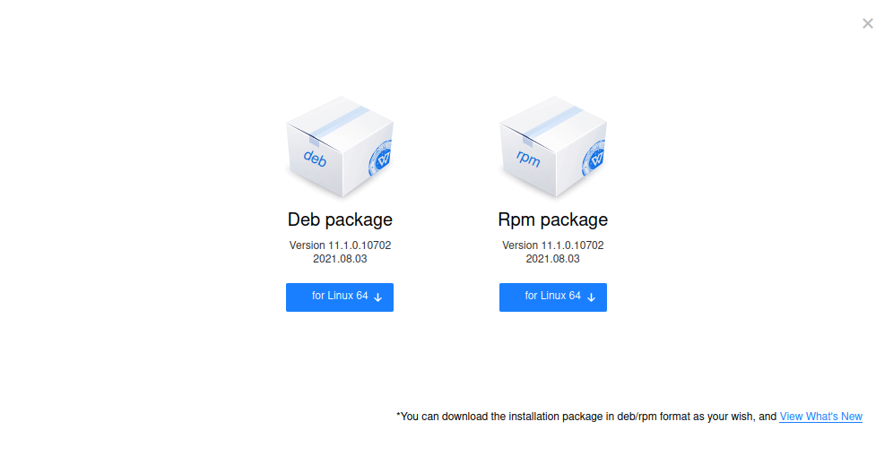
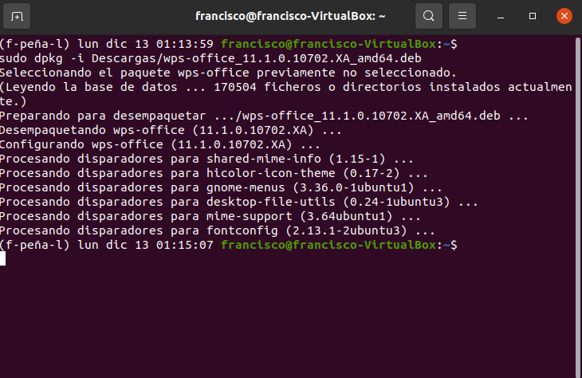

Vamos a instalar un paquete ofimático para ubuntu, en este caso WSP Office
Los primero sera ir a la pagina de WPS Office y a la seccion de Linux
Descargaremos la opción de "Deb package" que es para nuestra distribucion de Linux
Ahora ejecutaremos el siguiente comando en el terminal de ubuntu: sudo dpkg -i [Ruta del archivo descargado] y esperamos hasta que se instale
